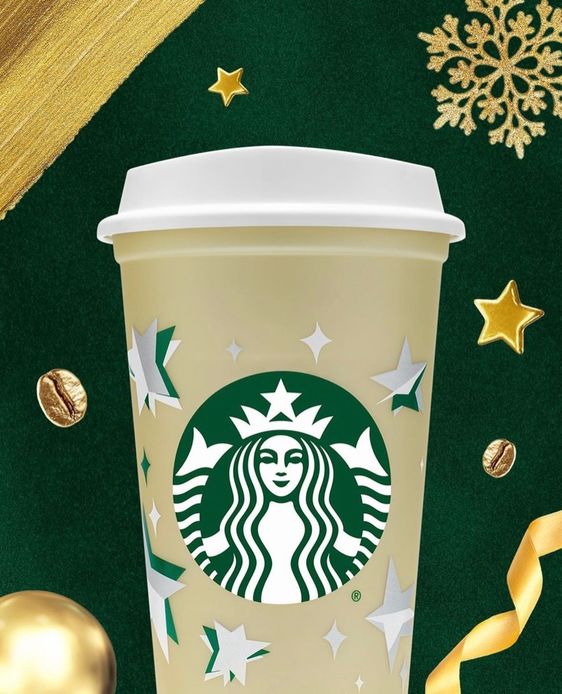
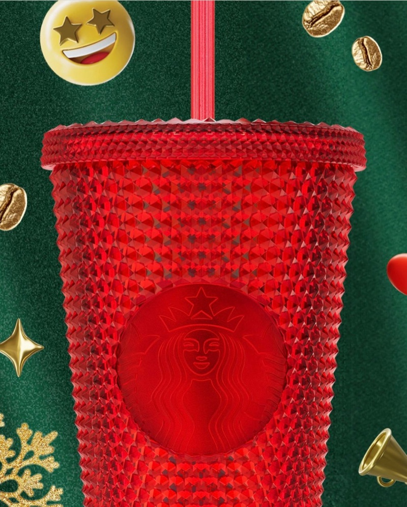
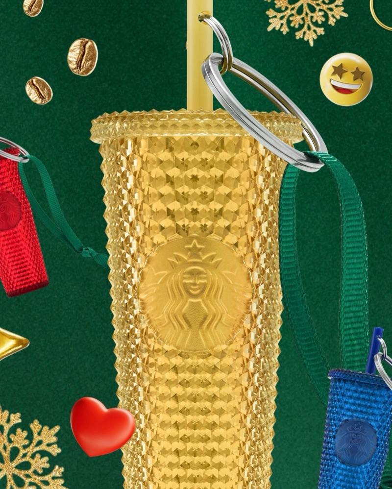
Role & Responsibilities
- Concept DevelopmentInterpreted briefs to develop creative concepts that reflect seasonal themes and regional preferences.
- Design ExecutionCreated detailed renderings and mock-ups for a variety of merchandise items, ensuring consistency across product lines.
- CollaborationWorked closely with cross-functional teams, including marketing, production, and external partners like Disney, to ensure designs met all requirements and standards.
- Production HandoffPrepared and delivered comprehensive design files and specifications for manufacturing, facilitating a smooth transition from design to production.
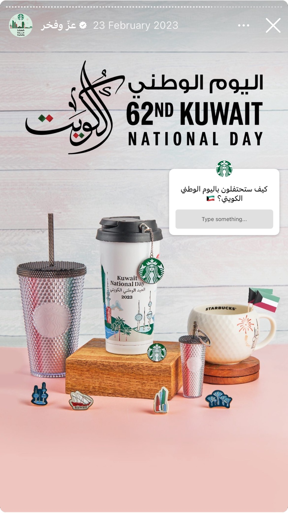
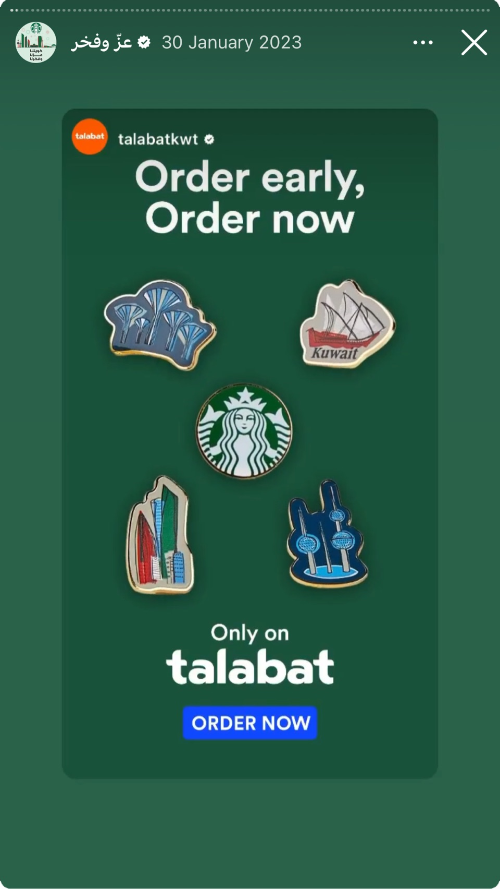
Design Process
- 01Research & InspirationAnalyzed market trends, regional cultural elements, and seasonal motifs to inform design direction.
- 02Sketching & PrototypingDeveloped initial sketches and prototypes to explore form, color, and material options.
- 03Feedback & RefinementIncorporated feedback from stakeholders to refine designs, ensuring alignment with brand identity and market expectations.
- 04FinalizationCompleted final designs with detailed specifications, ready for production and distribution.
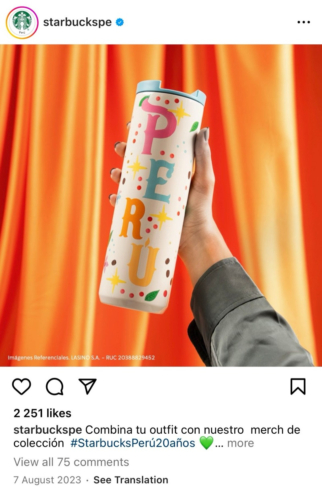
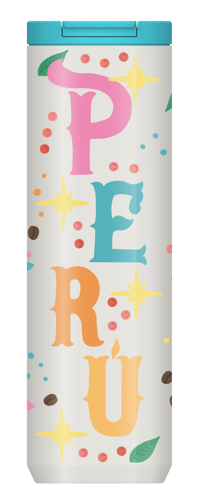
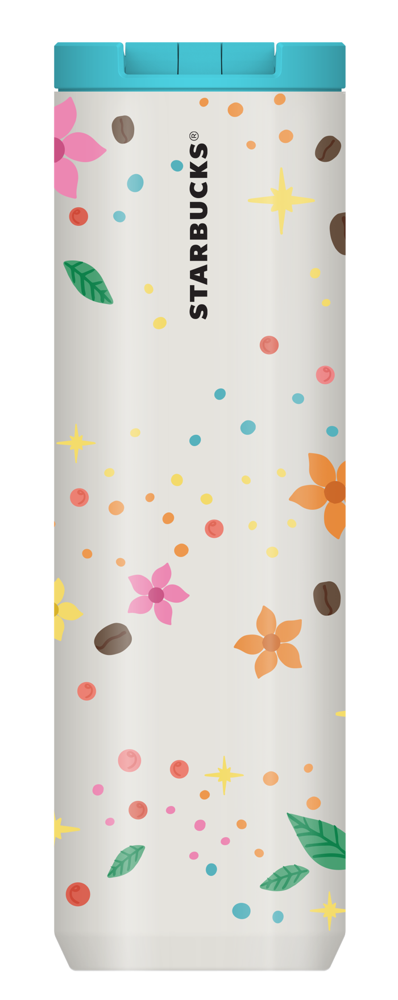
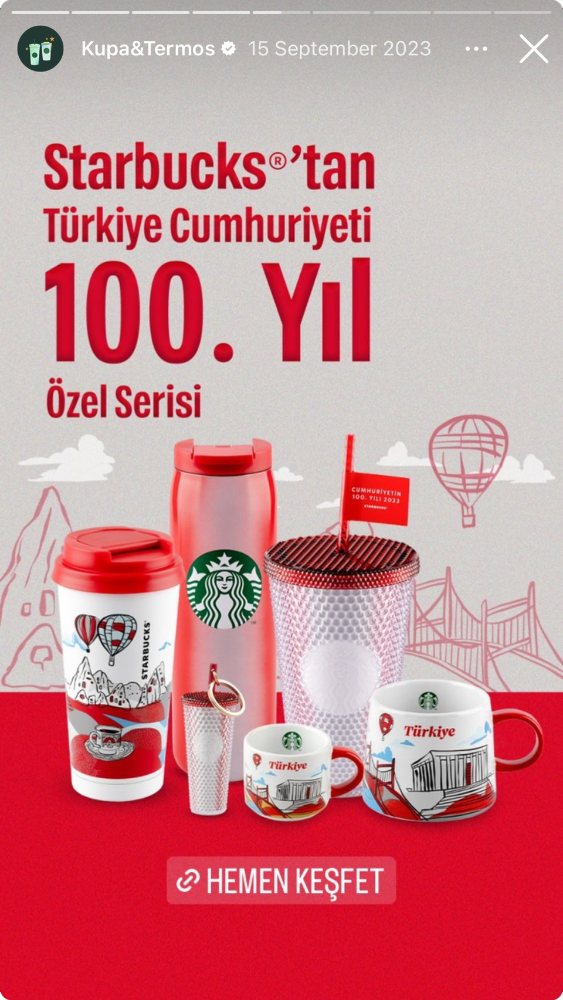
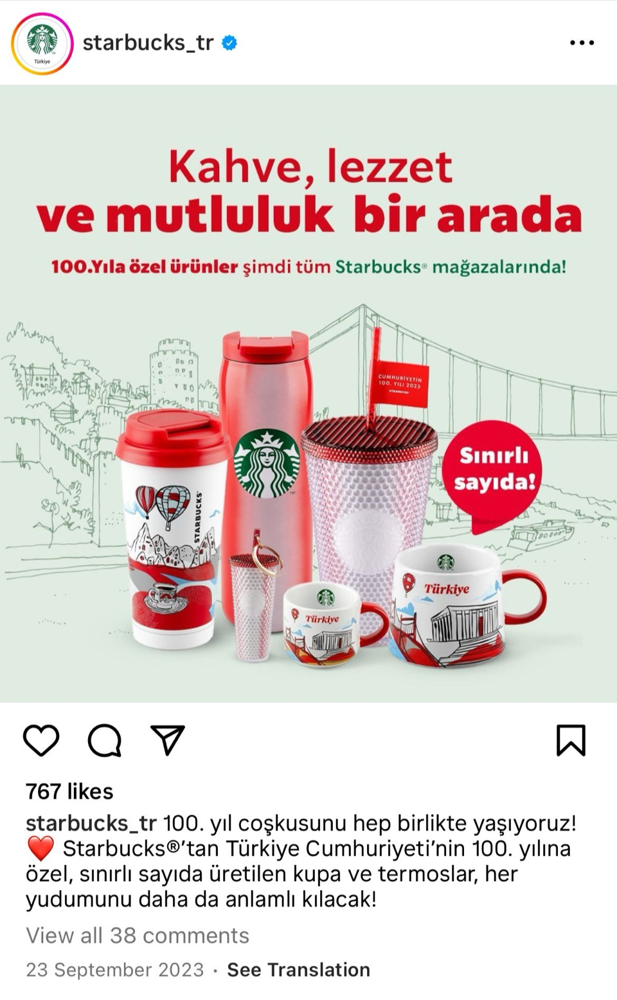
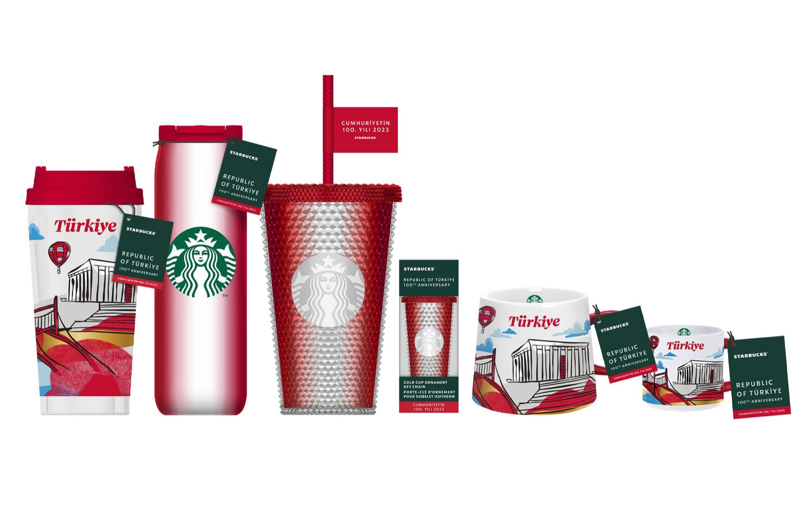
Outcome
The merchandise collections were successfully launched across multiple regions, receiving positive feedback for their cultural relevance and design quality. Collaborations with local artists added a unique dimension to the product lines, enhancing brand appeal and customer engagement.
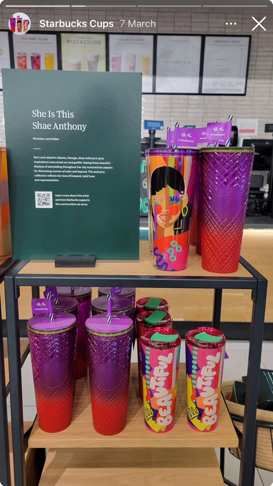
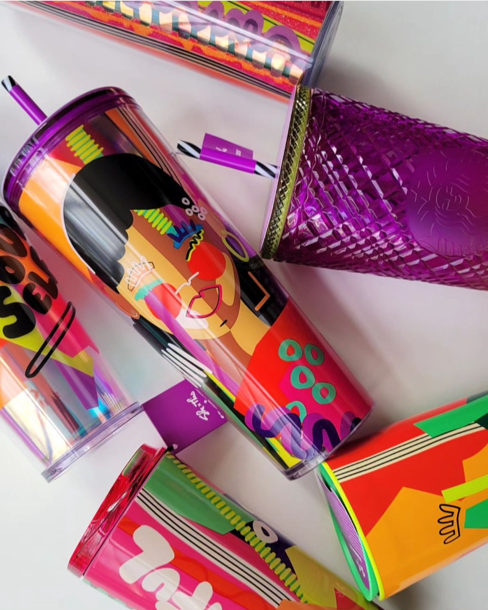
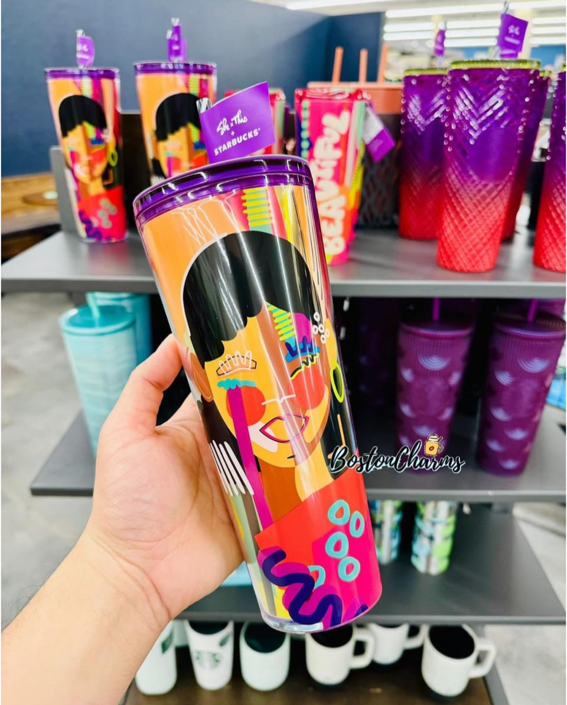